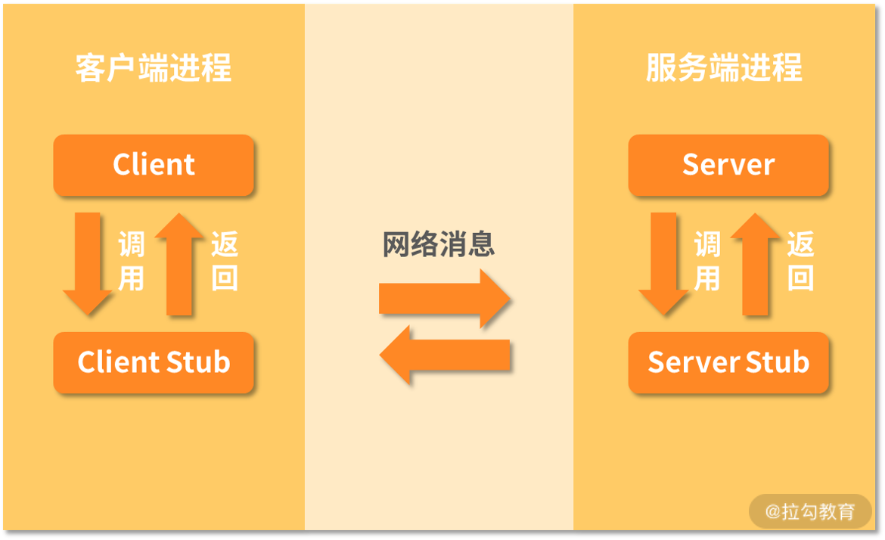
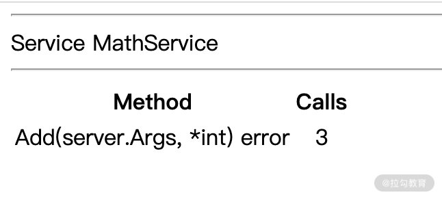

- 00 开篇词 Go 为开发者的需求设计，带你实现高效工作.md.html
- 01 基础入门：编写你的第一个 Go 语言程序.md.html
- 02 数据类型：你必须掌握的数据类型有哪些？.md.html
- 03 控制结构：if、for、switch 逻辑语句的那些事儿.md.html
- 04 集合类型：如何正确使用 array、slice 和 map？.md.html
- 05 函数和方法：Go 语言中的函数和方法到底有什么不同？.md.html
- 06 struct 和 interface：结构体与接口都实现了哪些功能？.md.html
- 07 错误处理：如何通过 error、deferred、panic 等处理错误？.md.html
- 08 并发基础：Goroutines 和 Channels 的声明与使用.md.html
- 09 同步原语：sync 包让你对并发控制得心应手.md.html
- 10 Context：你必须掌握的多线程并发控制神器.md.html
- 11 并发模式：Go 语言中即学即用的高效并发模式.md.html
- 12 指针详解：在什么情况下应该使用指针？.md.html
- 13 参数传递：值、引用及指针之间的区别？.md.html
- 14 内存分配：new 还是 make？什么情况下该用谁？.md.html
- 15 运行时反射：字符串和结构体之间如何转换？.md.html
- 16 非类型安全：让你既爱又恨的 unsafe.md.html
- 17 SliceHeader：slice 如何高效处理数据？.md.html
- 18 质量保证：Go 语言如何通过测试保证质量？.md.html
- 19 性能优化：Go 语言如何进行代码检查和优化？.md.html
- 20 协作开发：模块化管理为什么能够提升研发效能？.md.html
- 21 网络编程：Go 语言如何玩转 RESTful API 服务？.md.html
- 22 网络编程：Go 语言如何通过 RPC 实现跨平台服务？.md.html
- 23 结束语 你的 Go 语言成长之路.md.html
22 网络编程：Go 语言如何通过 RPC 实现跨平台服务？
在上一讲中，我为你讲解了 RESTful API 的规范以及实现，并且留了两个作业，它们分别是删除和修改用户，现在我为你讲解这两个作业。
删除一个用户比较简单，它的 API 格式和获取一个用户一样，但是 HTTP 方法换成了DELETE。删除一个用户的示例代码如下所示：
ch21/main.go
func main() {
//省略没有修改的代码
r.DELETE("/users/:id", deleteUser)
}
func deleteUser(c *gin.Context) {
id := c.Param("id")
i := -1
//类似于数据库的SQL查询
for index, u := range users {
if strings.EqualFold(id, strconv.Itoa(u.ID)) {
i = index
break
}
}
if i >= 0 {
users = append(users[:i], users[i+1:]...)
c.JSON(http.StatusNoContent, "")
} else {
c.JSON(http.StatusNotFound, gin.H{
"message": "用户不存在",
})
}
}
这个示例的逻辑就是注册 DELETE 方法，达到删除用户的目的。删除用户的逻辑是通过ID 查询：
- 如果可以找到要删除的用户，记录索引并跳出循环，然后根据索引删除该用户；
- 如果找不到要删除的用户，则返回 404。
实现了删除用户的逻辑后，相信你已经会修改一个用户的名字了，因为它和删除一个用户非常像，实现代码如下所示：
func main() {
//省略没有修改的代码
r.PATCH("/users/:id",updateUserName)
}
func updateUserName(c *gin.Context) {
id := c.Param("id")
i := -1
//类似于数据库的SQL查询
for index, u := range users {
if strings.EqualFold(id, strconv.Itoa(u.ID)) {
i = index
break
}
}
if i >= 0 {
users[i].Name = c.DefaultPostForm("name",users[i].Name)
c.JSON(http.StatusOK, users[i])
} else {
c.JSON(http.StatusNotFound, gin.H{
"message": "用户不存在",
})
}
}
整体代码逻辑和删除的差不多的，只不过这里使用的是 PATCH方法。
什么是RPC 服务
RPC，也就是远程过程调用，是分布式系统中不同节点调用的方式（进程间通信），属于 C/S 模式。RPC 由客户端发起，调用服务端的方法进行通信，然后服务端把结果返回给客户端。
RPC的核心有两个：通信协议和序列化。在 HTTP 2 之前，一般采用自定义 TCP 协议的方式进行通信，HTTP 2 出来后，也有采用该协议的，比如流行的gRPC。
序列化和反序列化是一种把传输内容编码和解码的方式，常见的编解码方式有 JSON、Protobuf 等。
在大多数 RPC的架构设计中，都有Client、Client Stub、Server、Server Stub这四个组件，Client 和 Server 之间通过 Socket 进行通信。RPC 架构如下图所示：

（图片来自于 Google 搜索）
下面我为你总结下 RPC 调用的流程：
- 客户端（Client）调用客户端存根（Client Stub），同时把参数传给客户端存根；
- 客户端存根将参数打包编码，并通过系统调用发送到服务端；
- 客户端本地系统发送信息到服务器；
- 服务器系统将信息发送到服务端存根（Server Stub）；
- 服务端存根解析信息，也就是解码；
- 服务端存根调用真正的服务端程序（Sever）；
- 服务端（Server）处理后，通过同样的方式，把结果再返回给客户端（Client）。
RPC 调用常用于大型项目，也就是我们现在常说的微服务，而且还会包含服务注册、治理、监控等功能，是一套完整的体系。
Go 语言 RPC 简单入门
RPC这么流行，Go 语言当然不会错过，在 Go SDK 中，已经内置了 net/rpc 包来帮助开发者实现 RPC。简单来说，net/rpc 包提供了通过网络访问服务端对象方法的能力。
现在我通过一个加法运算来演示 RPC的使用，它的服务端代码如下所示：
ch22/server/math_service.go
package server
type MathService struct {
}
type Args struct {
A, B int
}
func (m *MathService) Add(args Args, reply *int) error {
*reply = args.A + args.B
return nil
}
在以上代码中：
- 定义了MathService，用于表示一个远程服务对象；
- Args 结构体用于表示参数；
- Add 这个方法实现了加法的功能，加法的结果通过 replay这个指针变量返回。
有了这个定义好的服务对象，就可以把它注册到暴露的服务列表中，以供其他客户端使用了。在Go 语言中，要注册一个一个RPC 服务对象还是比较简单的，通过 RegisterName 方法即可，示例代码如下所示：
ch22/server_main.go
package main
import (
"gotour/ch22/server"
"log"
"net"
"net/rpc"
)
func main() {
rpc.RegisterName("MathService",new(server.MathService))
l, e := net.Listen("tcp", ":1234")
if e != nil {
log.Fatal("listen error:", e)
}
rpc.Accept(l)
}
以上示例代码中，通过 RegisterName 函数注册了一个服务对象，该函数接收两个参数：
- 服务名称（MathService）；
- 具体的服务对象，也就是我刚刚定义好的MathService 这个结构体。
然后通过 net.Listen 函数建立一个TCP 链接，在 1234 端口进行监听，最后通过 rpc.Accept 函数在该 TCP 链接上提供 MathService 这个 RPC 服务。现在客户端就可以看到MathService这个服务以及它的Add 方法了。
任何一个框架都有自己的规则，net/rpc 这个 Go 语言提供的RPC 框架也不例外。要想把一个对象注册为 RPC 服务，可以让客户端远程访问，那么该对象（类型）的方法必须满足如下条件：
- 方法的类型是可导出的（公开的）；
- 方法本身也是可导出的；
- 方法必须有 2 个参数，并且参数类型是可导出或者内建的；
- 方法必须返回一个 error 类型。
总结下来，该方法的格式如下所示：
func (t *T) MethodName(argType T1, replyType *T2) error
这里面的 T1、T2都是可以被 encoding/gob 序列化的。
- 第一个参数 argType 是调用者（客户端）提供的；
- 第二个参数 replyType是返回给调用者结果，必须是指针类型。
有了提供好的RPC 服务，现在再来看下客户端如何调用，它的代码如下所示：
ch22/client_main.go
package main
import (
"fmt"
"gotour/ch22/server"
"log"
"net/rpc"
)
func main() {
client, err := rpc.Dial("tcp", "localhost:1234")
if err != nil {
log.Fatal("dialing:", err)
}
args := server.Args{A:7,B:8}
var reply int
err = client.Call("MathService.Add", args, &reply)
if err != nil {
log.Fatal("MathService.Add error:", err)
}
fmt.Printf("MathService.Add: %d+%d=%d", args.A, args.B, reply)
}
在以上实例代码中，首先通过 rpc.Dial 函数建立 TCP 链接，需要注意的是这里的 IP、端口要和RPC 服务提供的一致，确保可以建立 RCP 链接。
TCP 链接建立成功后，就需要准备远程方法需要的参数，也就是示例中的args 和 reply。参数准备好之后，就可以通过 Call 方法调用远程的RPC 服务了。Call 方法有 3 个参数，它们的作用分别如下所示：
- 调用的远程方法的名字，这里是MathService.Add，点前面的部分是注册的服务的名称，点后面的部分是该服务的方法；
- 客户端为了调用远程方法提供的参数，示例中是args；
- 为了接收远程方法返回的结果，必须是一个指针，也就是示例中的& replay，这样客户端就可以获得服务端返回的结果了。
服务端和客户端的代码都写好了，现在就可以运行它们，测试 RPC调用的效果了。
首先运行服务端的代码，提供 RPC 服务，运行命令如下所示：
➜ go run ch22/server_main.go
然后运行客户端代码，测试调用 RPC的结果，运行命令如下所示：
➜ go run ch22/client_main.go
如果你看到了 MathService.Add: 7+8=15的结果，那么恭喜你，你完成了一个完整的RPC 调用。
基于 HTTP的RPC
RPC 除了可以通过 TCP 协议调用之外，还可以通过HTTP 协议进行调用，而且内置的net/rpc 包已经支持，现在我修改以上示例代码，支持 HTTP 协议的调用，服务端代码如下所示：
ch22/server_main.go
func main() {
rpc.RegisterName("MathService", new(server.MathService))
rpc.HandleHTTP()//新增的
l, e := net.Listen("tcp", ":1234")
if e != nil {
log.Fatal("listen error:", e)
}
http.Serve(l, nil)//换成http的服务
}
以上是服务端代码的修改，只需修改两处，我已经在代码中标注出来了，很容易理解。
服务端修改的代码不算多，客户端修改的代码就更少了，只需要修改一处即可，修改的部分如下所示：
ch22/client_main.go
func main() {
client, err := rpc.DialHTTP("tcp", "localhost:1234")
//省略了其他没有修改的代码
}
从以上代码可以看到，只需要把建立链接的方法从 Dial 换成 DialHTTP 即可。
现在分别运行服务端和客户端代码，就可以看到输出的结果了，和上面使用TCP 链接时是一样的。
此外，Go 语言 net/rpc 包提供的 HTTP 协议的 RPC 还有一个调试的 URL，运行服务端代码后，在浏览器中输入 http://localhost:1234/debug/rpc 回车，即可看到服务端注册的RPC 服务，以及每个服务的方法，如下图所示：

如上图所示，注册的 RPC 服务、方法的签名、已经被调用的次数都可以看到。
JSON RPC 跨平台通信
以上我实现的RPC 服务是基于 gob 编码的，这种编码在跨语言调用的时候比较困难，而当前在微服务架构中，RPC 服务的实现者和调用者都可能是不同的编程语言，因此我们实现的 RPC 服务要支持多语言的调用。
基于 TCP 的 JSON RPC
实现跨语言 RPC 服务的核心在于选择一个通用的编码，这样大多数语言都支持，比如常用的JSON。在 Go 语言中，实现一个 JSON RPC 服务非常简单，只需要使用 net/rpc/jsonrpc 包即可。
同样以上面的示例为例，我把它改造成支持 JSON的RPC 服务，服务端代码如下所示：
ch22/server_main.go
func main() {
rpc.RegisterName("MathService", new(server.MathService))
l, e := net.Listen("tcp", ":1234")
if e != nil {
log.Fatal("listen error:", e)
}
for {
conn, err := l.Accept()
if err != nil {
log.Println("jsonrpc.Serve: accept:", err.Error())
return
}
//json rpc
go jsonrpc.ServeConn(conn)
}
}
从以上代码可以看到，相比 gob 编码的RPC 服务，JSON 的 RPC 服务是把链接交给了jsonrpc.ServeConn这个函数处理，达到了基于 JSON 进行 RPC 调用的目的。
JSON RPC 的客户端代码也非常少，只需要修改一处，修改的部分如下所示：
ch22/client_main.go
func main() {
client, err := jsonrpc.Dial("tcp", "localhost:1234")
//省略了其他没有修改的代码
}
从以上代码可以看到，只需要把建立链接的 Dial方法换成 jsonrpc 包中的即可。
以上是使用 Go 语言作为客户端调用 RPC 服务的示例，其他编程语言也是类似的，只需要遵守 JSON-RPC 规范即可。
基于 HTTP的JSON RPC
相比基于 TCP 调用的RPC 来说，使用 HTTP肯定会更方便，也更通用。Go 语言内置的jsonrpc 并没有实现基于 HTTP的传输，所以就需要自己来实现，这里我参考 gob 编码的HTTP RPC 实现方式，来实现基于 HTTP的JSON RPC 服务。
还是上面的示例，我改造下让其支持 HTTP 协议，RPC 服务端代码如下所示：
ch22/server_main.go
func main() {
rpc.RegisterName("MathService", new(server.MathService))
//注册一个path，用于提供基于http的json rpc服务
http.HandleFunc(rpc.DefaultRPCPath, func(rw http.ResponseWriter, r *http.Request) {
conn, _, err := rw.(http.Hijacker).Hijack()
if err != nil {
log.Print("rpc hijacking ", r.RemoteAddr, ": ", err.Error())
return
}
var connected = "200 Connected to JSON RPC"
io.WriteString(conn, "HTTP/1.0 "+connected+"\n\n")
jsonrpc.ServeConn(conn)
})
l, e := net.Listen("tcp", ":1234")
if e != nil {
log.Fatal("listen error:", e)
}
http.Serve(l, nil)//换成http的服务
}
以上代码的实现基于 HTTP 协议的核心，即使用 http.HandleFunc 注册了一个 path，对外提供基于 HTTP 的 JSON RPC 服务。在这个 HTTP 服务的实现中，通过Hijack方法劫持链接，然后转交给 jsonrpc 处理，这样就实现了基于 HTTP 协议的 JSON RPC 服务。
实现了服务端的代码后，现在开始实现客户端调用，它的代码如下所示：
func main() {
client, err := DialHTTP("tcp", "localhost:1234")
if err != nil {
log.Fatal("dialing:", err)
}
args := server.Args{A:7,B:8}
var reply int
err = client.Call("MathService.Add", args, &reply)
if err != nil {
log.Fatal("MathService.Add error:", err)
}
fmt.Printf("MathService.Add: %d+%d=%d", args.A, args.B, reply)
}
// DialHTTP connects to an HTTP RPC server at the specified network address
// listening on the default HTTP RPC path.
func DialHTTP(network, address string) (*rpc.Client, error) {
return DialHTTPPath(network, address, rpc.DefaultRPCPath)
}
// DialHTTPPath connects to an HTTP RPC server
// at the specified network address and path.
func DialHTTPPath(network, address, path string) (*rpc.Client, error) {
var err error
conn, err := net.Dial(network, address)
if err != nil {
return nil, err
}
io.WriteString(conn, "GET "+path+" HTTP/1.0\n\n")
// Require successful HTTP response
// before switching to RPC protocol.
resp, err := http.ReadResponse(bufio.NewReader(conn), &http.Request{Method: "GET"})
connected := "200 Connected to JSON RPC"
if err == nil && resp.Status == connected {
return jsonrpc.NewClient(conn), nil
}
if err == nil {
err = errors.New("unexpected HTTP response: " + resp.Status)
}
conn.Close()
return nil, &net.OpError{
Op: "dial-http",
Net: network + " " + address,
Addr: nil,
Err: err,
}
}
以上这段代码的核心在于通过建立好的TCP 链接，发送 HTTP 请求调用远程的HTTP JSON RPC 服务，这里使用的是 HTTP GET 方法。
分别运行服务端和客户端，就可以看到正确的HTTP JSON RPC 调用结果了。
总结
这一讲基于 Go 语言自带的RPC 框架，讲解了 RPC 服务的实现以及调用。通过这一讲的学习相信你可以很好地了解什么是 RPC 服务，基于 TCP 和 HTTP 实现的RPC 服务有什么不同，它们是如何实现的等等。
不过在实际的项目开发中，使用Go 语言自带的 RPC 框架并不多，但是这里我还是以自带的框架为例进行讲解，这样可以更好地理解 RPC 的使用以及实现原理。如果你可以很好地掌握它们，那么你使用第三方的 RPC 框架也可以很快上手。
在实际的项目中，比较常用的是Google的gRPC 框架，它是通过Protobuf 序列化的，是基于 HTTP/2 协议的二进制传输，并且支持很多编程语言，效率也比较高。关于 gRPC的使用可以看官网的文档，入门是很容易的。